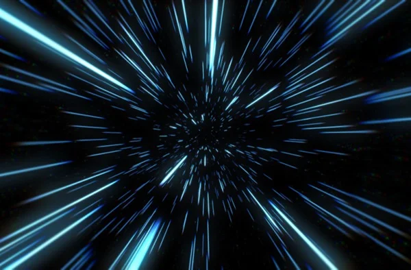
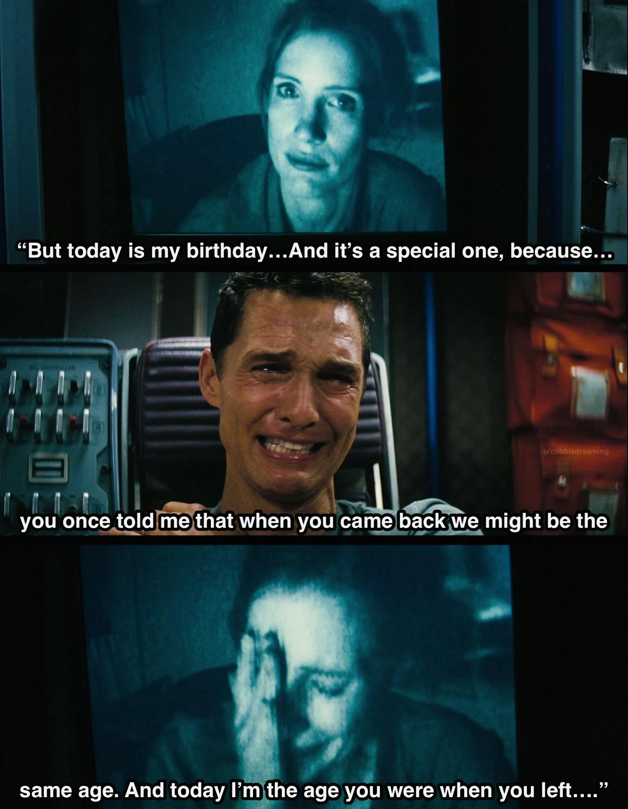
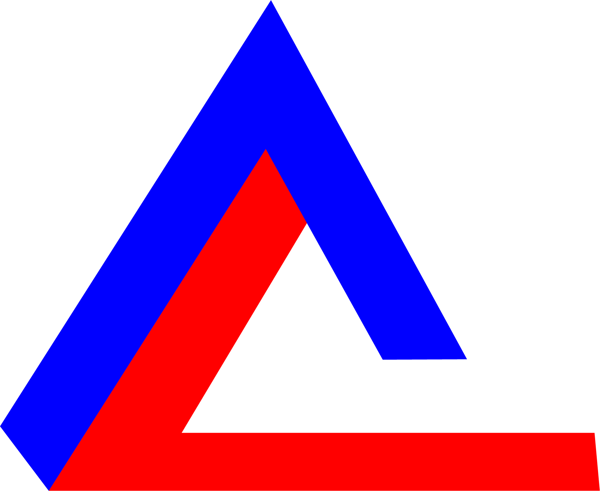
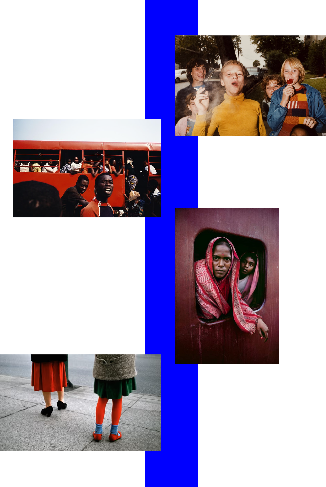
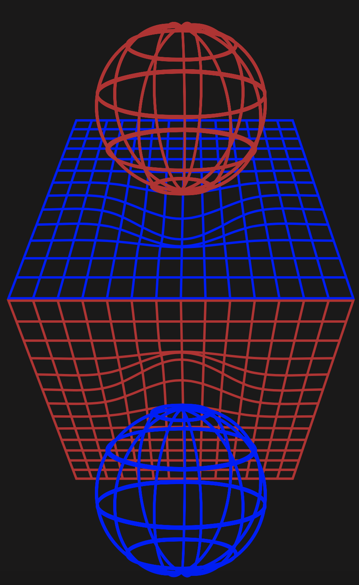

This site requires audio. Click anywhere to begin.
THE BIG FLAT
NOW
There is
no perspective
&
no yesterday no tomorrow
. . .

It has permanently changed our relationship with time and space.
Cultural production in the third millennium is totally flat. The information we make and share travels through media that lack hierarchy or centrality. There is no principal authority, no recognized arbitrator, and no centralized archive. It has permanently changed our relationship with time and space. As a contemporary metaphor, flatness describes how the invention of the Internet has restructured global society.More than 90 percent of our species has access to 3G, and there are more than seven billion mobile phones on the planet. Access to the World Wide Web is universally cheap, or even free. Any informational format, from any period of human history, is available at anytime, anywhere, and to anyone. In 1993, there were just 23,000 websites and less than 40 million users. In 2018, there are roughly a billion websites, and more than three billion users.
The goal of flatness is a kind of real-time, or total Earth time.
Flatness argues everything is
Nowness argues that it is
the same everywhere.
the same time everywhere.

In an era before instant communication, there was no such thing as the contemporary. Each location had its own rhythms, isolated movements and private concerns. A century ago, travelling from Lima to Linz displaced you in space, but the journey also relocated you into someone else’s time. By contrast, the goal of flatness is a kind of real-time, or total Earth time. On waking, the first thing most of us do is look at our screens, syncing ourselves back into the flow. We feel perpetually jetlagged.
Film Still
Film Name: Interstellar
Runtime: 2h 49m (169 min)
Director: Christopher Nolan
Scene: Astronaut watches his daughter grow up through video transmissions recieved decades later in deep space.
HUBBLE ULTRA DEEP FIELD IMAGE: DISPLACED ON GRIDS
Object Name: SMACS 0723-73 (1RXS J072319.7-732735, SMACS J0723.3-7327)
Object Description: Lensing Galaxy Cluster
R.A. Position: 07:23:19.5
Dec. Position-73:27:15.6
Constellation: Volans
Distance: Redshift of cluster is z=0.39 (about 4.24 billion light-years)
Dimensions: Image is about 2.4 arcmin across
Nowness and flatness are not just conditions affecting the present. They have colonized other times too. The ability to view vast volumes of data and records from the past, as well as grasp a variety of positions on the future, means that there is no longer any meaningful separation between other eras and our own. Indeed, history is today understood as a kind of alternative present, still happening somewhere else. To navigate this exponentially expanding realm, which is now coextensive with reality, users have come to depend on a very small number of platforms. If all information is treated as equal, it attains a flatness. Anyone can become a publisher, generate revenue and attain relative fame. Value is created through a closed circuit of meritocracy. Content providers are rewarded by the platforms relative to the mimetic and seductive qualities of their content.
THE Big Flat Now
THE Big Flat Now
THE Big Flat Now
The Big Flat Now is fueled by creative content, which is design information applied to both physical and immaterial objects. The purpose of this content is to distort the perfect smoothness of the cultural landscape. When creativity attracts attention, it produces a temporary center. This is a fleeting concentration of time, space and money. Each platform has inherent format preferences and prescribed possibilities for integration. These qualities influence the types of creation that can take place. YouTube is driven by views – it promotes personalities and performances. Instagram consumes images – it promotes brands and products. Facebook exploits friendships – it sells access to its user base.
The sheer volume of information available puts a lot of pressure on the speed of communication. Creative content must be understood instantly, otherwise there is no traction. The paradox of this output is that it must be familiar and uncomplicated, but also astonishing and new.

. . .
From top to bottom: Kylie Jenner Lip Challenge, Cinnamon Challenge, Harlem Shake, Planking, Ice Bucket Challenge
To do this, creatives often combine well-known, but apparently unrelated, design categories. The more obscure the connection and the more familiar the archetypes, the more surprising the result. The negative space between references is the engine for novelty. For some platforms, such as Facebook or Twitter, the negative space itself is their core activity. These forums are engines for polarization, and they rely on exaggerating differences between users to create content chain reactions: a statement is made, your response generates more content, others respond with new content, and so on. The law of entropy describes how energy systems degrade from concentrated to dispersed over time.Petrol is burnt. Ice melts. Young people get old. Arguers get bored. Eventually, all potential is exhausted. To stimulate polarization, these platforms have to constantly inject new energy. They have to manage unreactive users into conditions of engagement. This might mean helping isolated individuals with common interests unite (producing subcultures), but can just as easily involve provoking disunity (integrating trolls).
"The promise of the Internet may yet be fully realized, but it requires a transition in power. The twentieth century was an extremely long one, but we are finally reaching its end. All signs point toward a renaissance in the coming decade. What lies ahead is a flatness powered by radical inclusivity."

This is how flatness has come to encompass other forms of intense difference in society: wealth disparity, institutional racism, the gender pay gap, and intergenerational gulfs. Such fundamental belief systems, in which opinions are frequently inherited, produce extreme disagreement. When this is combined with disinformation about basic facts, parallel worldviews can be cultivated and collided. In a literal sense, we do not realize we are all the same because we have been programmed to construct our own micro-realities. However, it is also true that we can now unite behind a common cause, or feel deep empathy with others, in ways that were never previously possible. Our experience of flatness is overwhelmingly big, and this has concealed the extent of its distortions until very recently. Now that we understand how differences are explored and exploited by entities such as Cambridge Analytica, we can see that flatness is not powered by sameness. Now that we
understand net neutrality has been seriously compromised, we can see the importance of pursuing flatness. Fortunately, awareness prefigures agency.
At its origin...

At its origin, the promise of the Internet was a social revolution founded on intersectional equality and universal democracy. Web 2.0 arose in the mid 2000s and hijacked that spirit. But it is unlikely to remain that way very much longer. In the last three years, we have witnessed the beginning of a profound paradigm shift, one that is redefining flatness by exploiting its own internal inconsistencies. This shift coincides (perhaps truly coincidentally) with the maturing of the first post-2008 generation.
They were not conscious during 9/11. They can barely remember the boom years. They have only known austerity, instability, inequality, and exploitation. For those of us who are slightly older, we have been overwhelmed by disillusion, and the memories of failed revolutions: Yes We Can, Occupy, the Arab Spring. This has manifested itself as nihilism, irony, a profound belief in the decline of civilization, even a sense that we’ve reached a cultural dead-end. But for every Brexit, Trump, neo-Nazi rally, or Jihadi attack, there has been a mirror: a Black Lives Matter, a #MeToo, a #TimesUp, or a March For Our Lives
THESE MOVEMENTS HAVE BEEN SUCCESSFUL BECAUSE THEY EXPLOIT A STRUCTURAL WEAKNESS OF FLATNESS: THE NEED TO DISRUPT SAMENESS AND CONCENTRATE ATTENTION. THEY HAVE GAMED THE SYSTEM, BOLTING KITTEN MEMES AND COFFEE ART ONTO CIVIL RIGHTS AND SOCIAL JUSTICE. THEY DO NOT DISTINGUISH BETWEEN PHYSICAL SPACE AND VIRTUAL TIME, BLENDING ABSTRACT SUPPORT WITH DIRECT PARTICIPATION AND COMMUNITY.
. . .
Jack Self (1987) is an architect and writer based in London. He is Director of the REAL foundation and Editor-in-Chief of the Real Review. In 2016, Jack curated the British Pavilion at the Venice Architecture Biennale.